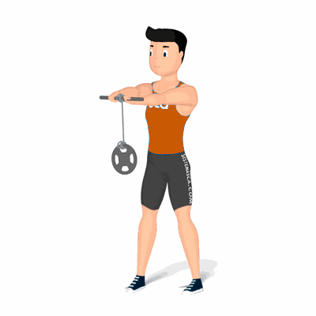

Rosca de Punho com Rolo

Esse exercício é uma ótima maneira para desenvolver e fortalecer os músculos da mão, punho e antebraço.
Ficha Técnica
Tipo: Musculação
Grupo Muscular: Antebraço
Aparelho: Nenhum
Músculos: Nenhum
Como realizar
- Fique ereto com os pés paralelos aos ombros, braços esticados na altura dos ombros;
- Você pode iniciar o movimento com a corda esticada, enrole a corda com um movimento rodando a barra, uma mão após a outra, repetindo até o peso encostar na barra;
- Em seguida, retorne o peso para baixo, girando os punhos na direção oposta, depois repita os movimentos novamente.
 RC STORE
RC STORE